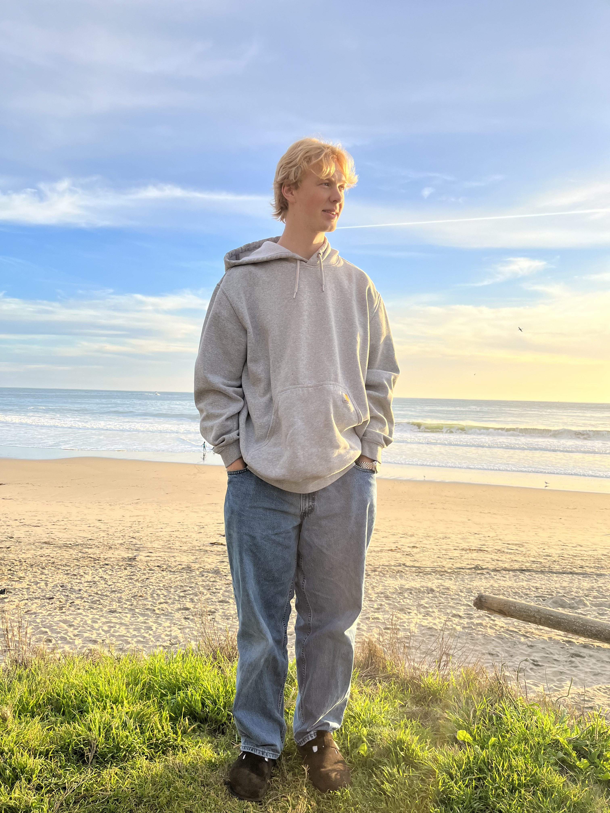

Hi, I'm Ryan. I grew up in Central Oregon and now live in San Diego with three awesome roommates. I like building little software projects for myself, doing research, and performing data science magic. Feel free to look around my website.
I'm finishing my Data Science degree at UC San Diego. My capstone research focuses on fusion reactor simulations, using neural networks to predict how heat and particles move through plasma. I'm also a Data and Program Analytics intern with the Skinny Gene Project, a nonprofit focused on diabetes prevention. Im really hoping to land a full time job soon, but the job market appears to be fried.
I enjoy reading about history, philosophy, psychology, and science. Lately, I've been writing more and listening to podcasts like Heavyweight, Ologies, Radiolab, and This American Life. I also like spending time with my partner, going to the gym, and getting outside whenever I can.
Something I've been thinking about lately is death, and what makes a life worth living, largely inspired by Professor Shelly Kagan's Yale lecture, How to Live Given the Certainty of Death.
My love of Mexican food has accidentally turned into a weekly Taco Tuesday tradition with my friends at Agave Birrieria near SDSU. We each share a "rose, bud, and thorn": our favorite part of the week, what we're most looking forward to, and the worst part of the week. Carving out this mandatory gathering with food each week has been great.
Back home in Oregon, I go fly fishing, hike, golf, and hang out with my dogs, Slinky and Stanley. This summer, my brother and I climbed the South Sister and Broken Top mountains in the Cascade Mountain range. I'd like to find a bigger mountain next time.
I also enjoy taking on carpentry and landscaping projects in my free time. This summer's projects were a new shed for my family, a 14 by 14 foot deck for my neighbor's house, and a big 10,000lb retaining wall. Building the deck in 100 degree heat was crazy.
